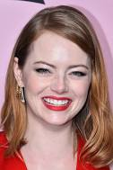
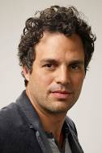
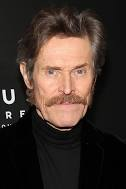
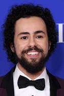
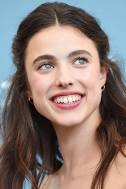
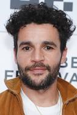
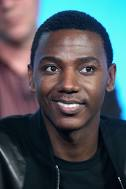
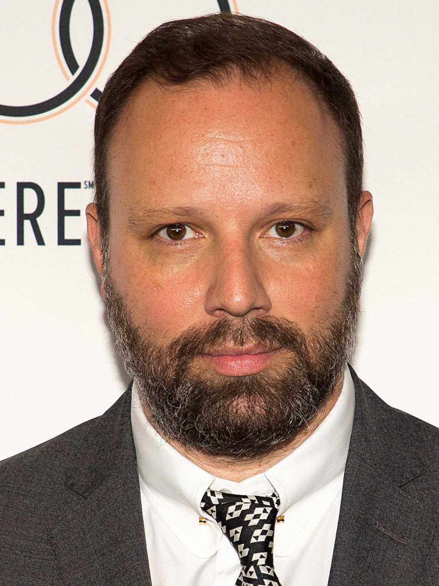

Elenco Principal & Personagens
A produção estreou nos cinemas brasileiros com prestígio após receber,
até então, dois Globos de Ouro®, nas categorias Melhor Filme de Musical
ou Comédia e Melhor Atriz em Musical ou Comédia (Emma Stone), além de
incríveis onze indicações ao Oscar® de Melhor Filme, Melhor Direção
(Yorgos Lanthimos), Melhor Atriz (Emma Stone), Melhor Ator Coadjuvante
(Mark Ruffalo), Melhor Roteiro Adaptado, Melhor Trilha Sonora, Melhor
Figurino, Melhor Design de Produção, Melhor Montagem, Melhor Fotografia
e Melhor Maquiagem e Cabelo.
O sucesso em premiações e públicos se deve muito, também, ao grande
elenco e seus personagens peculiares.
Conheça abaixo:

Emma Stone como Bella Baxter

Mark Ruffalo como Duncan Wedderburn

Willem Dafoe como Dr.Godwin Baxter

Ramy Youssef como Max McCandles

Margaret Qualley como Felicity

Christopher Abbott como Alfie Blessington
Kathryn Hunter como Swiney
Hanna Schygulla como Martha Von Kutzroc

Jerrod Carmichael como Harry Astley

Créditos ao diretor - Yorgos Lanthimos
Elenco Secundário
- Vicki Pepperdine - Mrs. Prim
- Margaret Qualley - Felicity
- Hanna Schygulla - Martha Von Kurtzroc
- Damien Bonnard - pai
- John Locke - David
- Wayne Brett - padre
- Emma Hindle
- Donovan Fouassier - filho 2
- Kate Handford - Kitty
- Owen Good - Gerald
- Vivienne Soan - Duchess
- Tom Stourton - Steward
- Laurent Winkler - Cirurgião
- Jack Barton - fop 1
- Charlie Hiscock - fop 2
- Jerskin Fendrix - músico
- Miles Jovian - Comissário
- Patrick de Valette - Chapelle
- Raphaël Thiéry - açougueiro
- Andrew Hefler
- Roderick Hill - homem no parque
- Keeley Forsyth - empregada doméstica
- David Bromley - Doutor de Alfie
- Jeremy Wheeler (III) - oficial do navio
- Hubert Benhamdine - padre
- Laurent Borel - Crabman
Trilha Sonora
- Jerskin Fendrix - Compositor
Produção
- Ildiko Kemeny - Coprodutor
- Ed Guiney - Produtor
- Mónika Nagy - Produtor de set
- Daniel Battsek - Produtor Executivo
- Ollie Madden - Produtor Executivo
- Andrew Lowe - Produtor
- Kasia Malipan - Coprodutor
- David Minkowski - Coprodutor
- Yorgos Lanthimos - Produtor
- Emma Stone - Produtor
- Ali Herting - Produtor
- Dave McCary - Produtor
Equipe Técnica
- Nadia Stacey - Cabeleireiro chefe
- Holly Waddington - Chefe figurinista
- Yorgos Mavropsaridis - Montador chefe
- James Price (II) - Cenografista
- Mark Coulier - Editor dos efeitos especiais de maquiagem
- Johnnie Burn - Engenheiro de som
- Robbie Ryan - Diretor de fotografia
- Simon Hughes (II) - Supervisor de efeitos visuais
- Nadia Stacey - Maquiador chefe
- Josh Weston - Editor dos efeitos especiais de maquiagem
- Zsuzsa Mihalek - Cenografista
- Shona Heath - Cenografista
Distribuição
- Matthieu Rey - Assessor de Imprensa
- Cédric Landemaine - Assessor de Imprensa
- Marina Aubé - Assessor de Imprensa
Empresas Envolvidas
- Walt Disney Pictures - Distribuição
- Searchlight Pictures - Produção
- Film4 - Production
- Disney Pictures - Distribuição